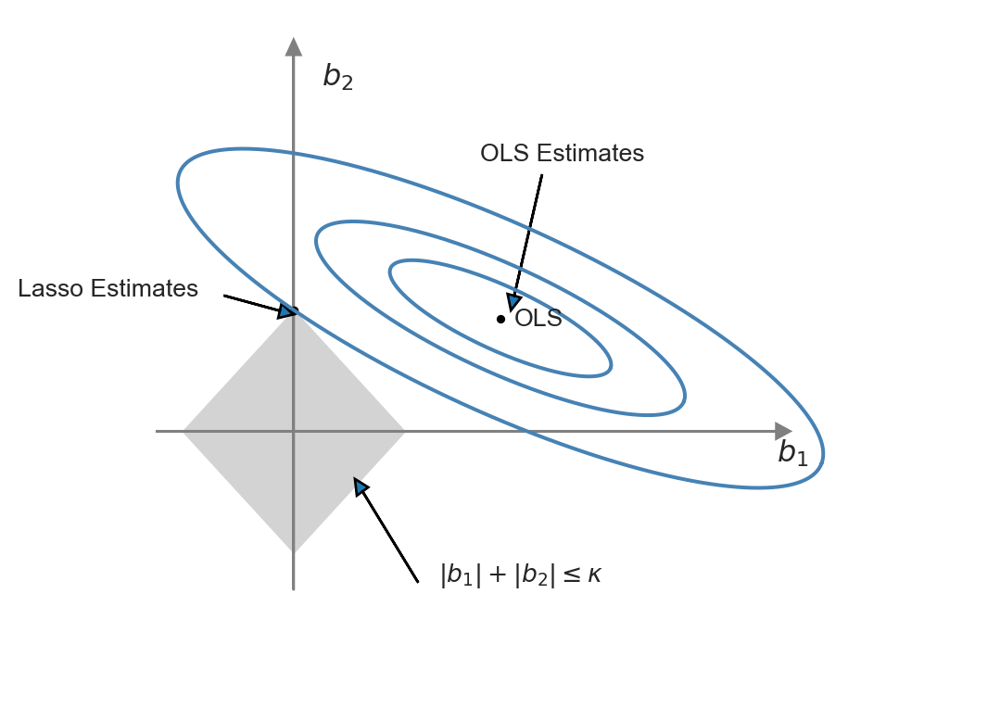
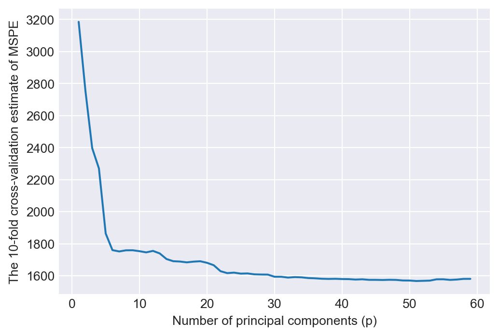
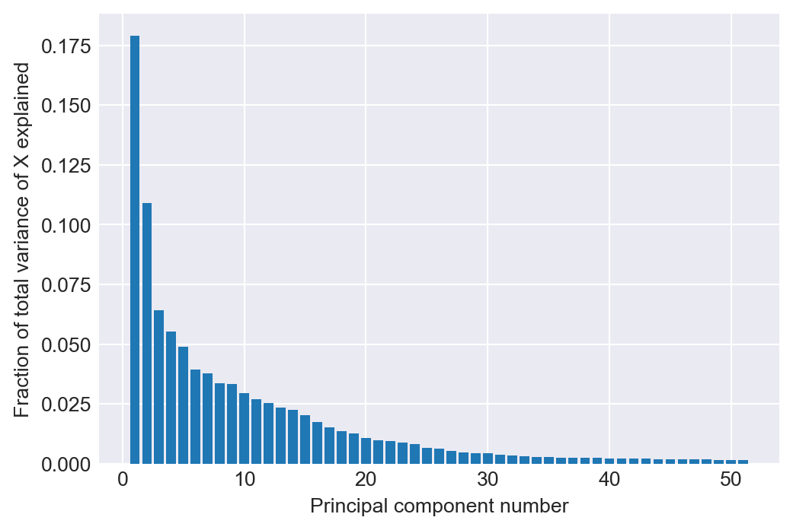
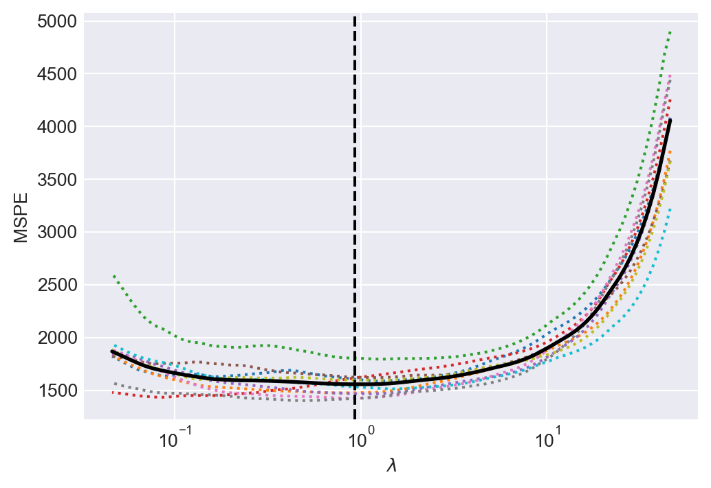
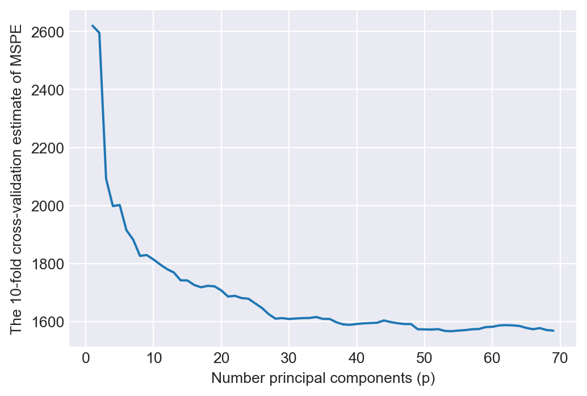
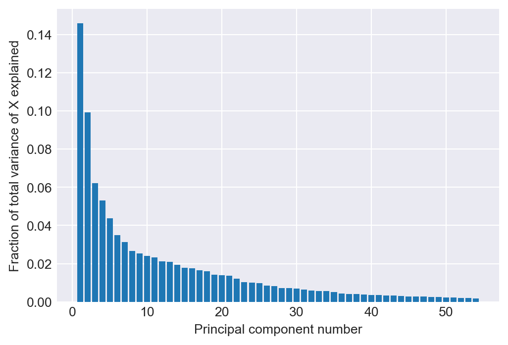
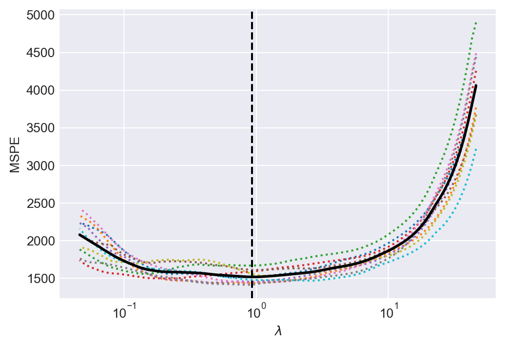

import pandas as pd
import numpy as np
import matplotlib.pyplot as plt
plt.style.use('seaborn-v0_8-darkgrid')
import scipy.stats as stats
from scipy.optimize import root_scalar
from sklearn.model_selection import cross_val_predict, KFold, cross_val_score
from sklearn.linear_model import RidgeCV, LassoCV, LinearRegression
from sklearn.linear_model import Lasso, Ridge
from sklearn.metrics import make_scorer, mean_squared_error
from sklearn.decomposition import PCA
import statsmodels.api as sm
from sklearn.pipeline import Pipeline
from sklearn.model_selection import GridSearchCV
import time
import pickle
import random
random.seed(13)
from warnings import simplefilter
simplefilter(action="ignore")23 Prediction with Many Regressors and Big Data
23.1 Introduction
A prediction exercise involves calculation of the values of an outcome variable using a prediction rule and data on the regressors (predictors). For the prediction rule, machine learning provides several competing methods.
Definition 23.1 (Machine Learning) Machine learning generally refers to methods and algorithms primarily used in prediction tasks.
These methods and algorithms are designed to handle large sample sizes, numerous variables, and unknown functional forms. Typically, these approaches do not focus on statistical modeling of the data, and as a result, there may be very few (or no) assumptions about the data generation process. The aim is to identify patterns and structures to improve the prediction of outcomes for new observations. Thus, in prediction exercises:
- We aim to generate accurate out-of-sample predictions.
- We do not distinguish between variables of interest and control variables; we consider all as predictors.
- We generally do not have causal interpretations for the estimated parameters.
In machine learning applications, the process of fitting a model or algorithm to data is often called training. Depending on the type of data used for training, machine learning applications can be classified into two types:
- Supervised learning (e.g., regression)
- Data include feature variables (regressors) and a response variable, meaning the data is already labeled.
- Applications are trained with labelled data, and the training can therefore be viewed as supervised machine learning.
- Unsupervised learning (e.g., classification)
- Applications are trained with raw data that are not labeled or otherwise manually prepared.
- The task is to group unsorted raw data according to similarities, patterns, and differences without any prior training on the data.
- Final categories are not known in advance, and the training data therefore cannot be labeled accordingly.
Big data often refer to the large number of observations in the dataset used in an empirical application. High-dimensional data refer to situations where datasets contain many predictors relative to the number of observations. Feature extraction refers to the preprocessing stage of data and involves creating feature variables (i.e., numerical embeddings) and corresponding feature matrices. This is especially relevant for text- or image- based machine learning problems. See, for example, Chapter 11 in Chernozhukov et al. (2024).
In this chapter, we will see that when the prediction problem is high-dimensional, the OLS estimator can produce poor out-of-sample predictions, and it becomes unfeasible to use when the number of predictors exceeds the number of observations. For high-dimensional prediction exercises, the family of shrinkage estimators tends to provide better out-of-sample performance. These estimators are biased, but they exploit the bias-variance trade-off in such a way that the gain in precision (relative to the increase in squared bias) can lead to relatively better out-of-sample predictions.
Definition 23.2 (Dimension Reduction/Regularization/Shrinkage) Dimension reduction/regularization/shrinkage (or feature selection) refers to methods for finding the most relevant variables in high-dimensional prediction exercises.
Some examples of dimension reduction methods include Lasso, elastic net, ridge regression, and principal components regression. In high-dimensional prediction exercises, there can be many variables that do not significantly contribute to the predictive performance of the model. A model that includes many irrelevant variables is often referred to as a sparse model.
In this chapter, we cover machine learning methods, including ridge, Lasso, elastic net, and principal components analysis, that can handle high-dimensional data. In this chapter, we will use the sklearn module to implement the machine learning methods.
There are several other machine learning methods that we will not cover in this chapter. These include, among others, regression trees, random forests, boosted trees, and neural networks. For more information, we recommend Chapter 29 of Hansen (2022) and Chapters 3 and 9 of Chernozhukov et al. (2024).
23.2 Prediction Problem
To evaluate the predictive performance of competing estimators (predictors), we resort to the mean squared prediction error (MSPE) or simply the mean squared error (MSE). Let \(m(X)\) be a predictor for the random variable \(Y\) based on \(X\). Then, the MSPE is given by \[ \begin{align*} \text{MSPE} = \E{\left(Y - m(X)\right)^2}. \end{align*} \]
The best predictor can be found by minimizing \(\text{MSPE}\) with respect to \(m(X)\equiv m\), i.e., \[ \begin{align*} \min_{m} \E{\left(Y - m\right)^2}&= \min_{m} \E\left(\E\left(Y - m\right)^2|X\right)\\ &= \E\left(\min_{m}\E\left(Y - m\right)^2|X\right). \end{align*} \]
Then, from the first-order condition for the minimization problem (assuming interchange of integration and differentiation is allowed), we obtain \[ \E(Y|X) - m = 0. \]
Therefore, the best predictor (the oracle predictor) is the conditional mean of \(Y\) given \(X\), i.e., \(\E(Y|X)\).
Often, the prediction we will be made for observations in the out-of-sample (or validation sample). Suppose there are \(k\) predictors and let us denote the observations in the out-of-sample by \((X_{1i}^{oos},...,X_{ki}^{oos},Y_i^{oos})\). We assume the following assumption for the out-of-sample observations.
We can call this assumption the external validity assumption, because it suggests that we can generalize the in-sample model to the out-of-sample observations. Under this assumption, the best predictor (the oracle predictor) \(\E(Y|X)\) is for both in-and out-of-sample observations.
If the best predictor were known, then the out-of-sample prediction would be trivial. However, since the best predictor is unknown, it must first be estimated. Therefore, the error in estimating \(\text{MSPE} = \E\left(Y_i^{oos} - \E(Y_i^{oos}|X_i^{oos})\right)^2\) for the out-of-sample observations involves two parts:
- the error in predicting \(Y_i^{oos}\), which is \(Y_i^{oos}-\E(Y_i^{oos}|X_i^{oos})\), and
- the error in estimating the oracle predictor \(\E\left(Y_i^{oos}|X_i^{oos}\right)\).
The obvious starting point for estimating the best predictor is using a linear regression model with the OLS estimator. However, the OLS estimator can produce poor predictions when \(k\) is large. We will consider alternative estimators that can produce better out-of-sample predictions than the OLS estimator.
23.3 The Predictive Regression Model with Standardized Regressors
In this section, we introduce the standardized predictive regression model. Let \((X^*_{1i},\dots,X^*_{ki},Y^{*}_i)\) for \(i=1,\dots,n\) be the raw data and consider the following model: \[ Y^*_i = \beta_0 + \beta^*_1 X^*_{1i}+\beta^*_2 X^*_{2i}+\cdots+\beta^*_k X^*_{ki}+u_i. \tag{23.1}\]
Let the population mean of \(Y^{*}_i\) be \(\mu_{Y^{*}}\), and let \(\mu_{X^{*}_j}\) and \(\sigma_{X^{*}_j}\) denote respectively the population mean and standard deviation of \(X_{ji}\) for \(j=1,2,...,k\). Suppose that \(\E(u_i|X^*_{1i},...,X^*_{ki})=0\) and \(\E(u_i^2|X^*_{1i},...,X^*_{ki})=\sigma_u^2\). Hence, the best predictor for \(Y^*_i\) is given by \[ \E(Y^*_i|X^*_{1i},...,X^*_{ki}) = \beta_0 + \beta^*_1 X^*_{1i}+\beta^*_2 X^*_{2i}+\cdots+\beta^*_k X^*_{ki}. \]
By the law of iterated expectations, we obtain \[ \begin{align*} &\E(\E(Y^*_i|X^*_{1i},...,X^*_{ki})) = \beta_0 + \beta^*_1 \E(X^*_{1i})+\beta^*_2 \E(X^*_{2i})+\cdots+\beta^*_k \E(X^*_{ki})\\ &\implies\mu_{Y^{*}} = \beta_0 + \beta^*_1 \mu_{X^{*}_1}+\beta^*_2 \mu_{X^{*}_2}+\cdots+\beta^*_k \mu_{X^{*}_k}. \end{align*} \]
Then, subtracting \(\mu_{Y^{*}}\) from \(Y^*_i\), we obtain \[ \begin{align} Y^*_i-\mu_{Y^{*}} &= \beta^{*}_1(X^{*}_{1i}-\mu_{X^{*}_1})+\cdots+\beta^{*}_k(X^*_{ki}-\mu_{X^{*}_k})+u_i\\ &=\beta^{*}_1\sigma_{X^{*}_1}\frac{(X^{*}_{1i}-\mu_{X^{*}_1})}{\sigma_{X^{*}_1}}+\cdots+\beta^{*}_k\sigma_{X^{*}_k}\frac{(X^*_{ki}-\mu_{X^{*}_k})}{\sigma_{X^{*}_k}}+u_i. \end{align} \tag{23.2}\]
Let the standardized regressors be \(X_{ji}=(X^{*}_{ji}-\mu_{X^{*}_j})/\sigma_{X^{*}_j}\) for \(j=1,2,...,k\) and the demeaned dependent variable be \(Y_i=Y^{*}_i-\mu_{Y^{*}}\). Also, denote \(\beta_j=\beta^{*}_j\sigma_{X^{*}_j}\) for \(j=1,\dots,k\). Then, the standardized predictive regression model is given by \[ Y_i = \beta_1X_{1i}+\beta_2X_{2i}+\cdots+\beta_kX_{ki}+u_i. \tag{23.3}\]
Comparing Equation 23.3 with Equation 23.1, we have \(\beta_j=\beta^{*}_j\sigma_{X^{*}_j}\) for \(j=1,\dots,k\). Therefore, \(\beta_j\) coefficient in Equation 23.3 can be interpreted as follows: if \(X^{*}_j\) increases by one standard deviation, then \(Y\) increases by \(\beta_j\) standard deviations, holding the other regressors constant.
In empirical applications, to demean outcome variable and to standardize the regressors, the unknown terms \(\mu_{Y^{*}}\), \(\mu_{X^{*}_j}\) and \(\sigma_{X^{*}_j}\) can be replaced with their sample counterparts.
23.4 The MSPE in the standardized predictive regression model
Let \(\bs{X}_i\) denote \((X_{1i},...,X_{ki})\). Under the zero conditional mean assumption, i.e., \(\E(u_i|\bs{X}_i)=0\), we obtain \[ \E\left(Y_i|\bs{X}_i\right) = \beta_1 X_{1i} + \beta_2 X_{2i} + \cdots + \beta_k X_{ki} \]
for any \(i\) from Equation 23.3. Using the estimates of \(\beta_1,...,\beta_k\), we can formulate the prediction for the out-of-sample for the \(i\)th observation as
\[ \widehat{Y}_i(\bs{X}_i^{oos})= \widehat{\beta}_1 X_{1i}^{oos} + \widehat{\beta}_2 X_{2i}^{oos} + \cdots + \widehat{\beta}_k X_{ki}^{oos}. \]
Thus, we can use \(\widehat{Y}_i(\bs{X}_i^{oos})\) as an estimator of \(\E(Y_i^{oos}|\bs{X}_i^{oos})\). Then, the prediction error is given by
\[ Y_i^{oos}-\widehat{Y}_i(\bs{X}_i^{oos}) =u_i^{oos} - \left((\widehat{\beta}_1-\beta_1)X_{1i}^{oos}+(\widehat{\beta}_2-\beta_2)X_{2i}^{oos}+\cdots+(\widehat{\beta}_k-\beta_k)X_{ki}^{oos}\right). \]
Under the first least squares assumption for prediction above, we know that \(u_i^{oos}\) is independent of the in-sample data used to estimate the coefficients. Also, the zero conditional mean assumption would imply \(u_i^{oos}\) is uncorrelated with \(\bs{X}_i^{oos}\). In that case, we can express \(\text{MSPE} = \E\left(Y_i^{oos} - \widehat{Y}_i(\bs{X}_i^{oos})\right)^2\) as
\[ \text{MSPE} = \sigma_{u}^2 + \E\left(\left( (\widehat{\beta}_1-\beta_1)X_{1i}^{oos}+(\widehat{\beta}_2-\beta_2)X_{2i}^{oos}+\cdots+(\widehat{\beta}_k-\beta_k)X_{ki}^{oos}\right)^2\right). \]
The first term represents the the prediction error made using the true (unknown) conditional mean, i.e., it arises from \(\E\left(Y_i^{oos}-\E(Y_i^{oos}|\bs{X}_i^{oos})\right)^2=\text{var}(u_i^{oos})=\sigma^2_u\). The second term is the contribution to the prediction error arising from the estimated regression coefficients. This expression suggests that we should choose an estimator that minimizes the second term. Since the second term is the sum of the squared bias and the variance of the estimator, its minimization entails a trade-off between bias and variance.
We know from the Gauss-Markov theorem that within the class of linear unbiased estimators the OLS estimator has the smallest variance under homoskedasticity. Therefore, in this class, the OLS estimator yields the smallest value for the second term in the MSPE. But note that there may be biased estimators that can yield smaller values for the second term in the MSPE. If the gain from reducing variance outweighs the loss from squared bias, these estimators may perform better in terms of MSPE.
In the special case where the regression error is homoskedastic, it can be shown that the MSPE of the OLS estimator is \(\text{MSPE}_{\text{OLS}}\approx\sigma_{u}^2(1+\frac{k}{n})\). We provide the proof of this result in Section B.2. In the empirical illustration in the next section, we will consider a regression with \(n=1966\) and \(k=38\). Then, \(k/n = 38/1966 = 0.02\), so using the OLS method entails only a \(2\%\) loss in MSPE relative to the oracle prediction.
Now, suppose we include these regressors as polynomials up to third order, along with their interactions, so that \(k=817\). Then, \(k/n=817/1966 \approx 0.40\), meaning a \(40\%\) deterioration in MSPE, which is large enough to warrant investigating estimators with lower MSPE than the OLS estimator.
The bias-variance trade-off can be used to formulate alternative estimators that have relatively lower MSPE than the OLS estimator. The idea is to intentionally introduce bias to the OLS estimator in such a way that the reduction in variance more than compensates for the increase in squared bias. The family of shrinkage estimators achieves this by shrinking the OLS estimator toward a specific value (usually zero), thereby reducing the variance of the estimator.
Definition 23.3 (Shrinkage Estimators) A shrinkage estimator is a biased estimator that shrinks the OLS estimator toward a specific value (usually zero), thereby achieving a relatively lower variance than the OLS estimator.
23.5 Estimation of the MSPE
The MSPE is an unknown constant, so we need to estimate it in order to assess the predictive performance of competing estimators. One way to estimate MSPE is by splitting the dataset into two parts: training and validation (or testing) subsamples. Using the training subsample, we can obtain the estimates of the model coefficients. Then, using the validation subsample, we can estimate the prediction errors. Then, the split-sample estimator of MSPE is given by \[ \widehat{\text{MSPE}}_{\text{split-sample}}=\frac{1}{n_{valid}}\sum_{i=1}^{n_{valid}}(Y_i^{oos}-\widehat{Y}_i^{oos})^2, \] where \(n_{valid}\) denotes the number of observations in the validation subsample. The split-sample MSPE is also referred to as the out-of-sample MSPE.
Another way to obtain an estimate of MSPE is through m-fold cross-validation. In this approach, we first divide the sample into \(m\) randomly chosen subsamples of approximately equal size. Then, we use the combined sub-samples \(2,3,...,m\) to obtain the estimates for the model coefficients. The training sample size is roughly \(n - \lceil n/m\rceil\). Then, using the observations in subsample \(1\), we can compute \[ \widehat{\text{MSPE}}_1=\frac{1}{n_1}\sum_{i=1}^{n_1}\left(Y_i^{oos,1}-\widehat{Y}_i^{oos,1}\right)^2, \] where \(n_{1}\) denotes the number of observations in subsample \(1\). We repeat this procedure for all remaining subsamples. Then, the \(m\)-fold cross-validation estimator of MSPE is given by \[ \widehat{\text{MSPE}}_{\text{m-fold}}=\frac{1}{m}\sum_{i=1}^{m}\left(\frac{n_i}{n/m}\right)\widehat{\text{MSPE}}_i, \] where \(n_i\) is the number of observations in subsample \(i\).
A larger value of \(m\) produces more efficient estimators of the coefficients because more observations are used each time the coefficients are estimated. From this perspective, the ideal scenario would be to use the so-called leave-one-out cross-validation estimator, for which \(m = n - 1\). However, a larger value of \(m\) means that the coefficients must be estimated \(m\) times. In applications where \(k\) is large (in the hundreds or more), leave-one-out cross validation may take considerable computer time. Therefore, the choice of \(m\) must be made taking into account practical constraints.
23.6 Penalized Regression Methods
23.6.1 Ridge Regression
The ridge estimator shrinks the estimated parameters toward zero by adding a penalty to the sum of squared residuals, which increases with the square of the estimated parameters. By minimizing the sum of these two terms (i.e., the penalized sum of squared residuals), the ridge estimator introduces bias but achieves a relatively smaller variance. Let \(SSR(b)\) denote the sum of the squared residuals, i.e., \(SSR(b) = \sum_{i=1}^n\left(Y_i - b_1X_{1i} - b_2X_{2i} - \cdots-b_kX_{ki}\right)^2\). The ridge regression estimator is defined as \[ \widehat{\beta}_R = \argmin_{b} \left(SSR(b) + \lambda_R \sum_{j=1}^kb_j^2\right), \tag{23.4}\] where \(\lambda_R > 0\) is called the shrinkage parameter. The second term is a penalty term because it penalizes the estimator for selecting large values for the coefficients, shrinking the ridge regression estimator toward zero. Thus, the ridge estimator produces estimates that are closer to 0 than those produced by the OLS estimator.
To understand why the ridge estimator shrinks the OLS estimator, we can alternatively express the ridge minimization problem as a constrained minimization problem: \[ \widehat{\beta}_R=\argmin_{b:\sum_{j=1}^kb_j^2\le \kappa} SSR(b), \tag{23.5}\] for some constraint parameter \(\kappa>0\). Then, the Lagrangian for the constrained minimization yields \[ \widehat{\beta}_R=\argmin_{b} \left(SSR(b) + \lambda_R\left(\sum_{j=1}^kb_j^2 - \kappa\right)\right), \] where \(\lambda_R\) is the Lagrangian multiplier.
The difference between Equation 23.4 and Equation 23.5 is that in the first problem we need to specify the shrinkage parameter, while in the second problem we need to specify the constraint parameter. The representation of the ridge minimization problem in Equation 23.5 is useful to produce a graphical representation for further insight. Following Hansen (2022), we use the following code chunk to illustrate the ridge minimization problem when there are two regressors so that the constraint set is \(\{(b_1,b_2): b^2_1+b^2_2<\kappa\}\). In Figure 23.1, the constraint set \(\{(b_1,b_2): b^2_1+b^2_2<\kappa\}\) is represented by the ball around the origin, and the contour sets of \(SSR(b)\) are depicted as ellipses. In this illustration, the OLS estimates correspond to the point at the center of the ellipses, whereas the ridge estimates are represented by the point on the circle where the outer-contour is tangent. This demonstrates that the ridge estimator effectively shrinks the OLS estimates toward zero.
# The ridge regression constrained minimization problem
# Parameters for plotting
x = np.arange(-1, 1.001, 0.001)
y = np.sqrt(1 - x**2) # Circle boundary for Lasso constraint
beta_ols = np.array([3/2, 3/4]) # OLS estimates
phi = -np.pi / 8 # Rotation angle for ellipses
a = 1.44 # Semi-major axis length for ellipses
b = a / 4 # Semi-minor axis length for ellipses
# Create the figure
plt.figure(figsize=(6, 5))
plt.fill_between(x, y, -y, color='gray', alpha=0.5, label="Lasso Constraint Region") # Lasso constraint area
plt.axis('off') # Turn off axis labels and ticks for clean visualization
# Axes arrows
plt.arrow(-2, 0, 5.75, 0, head_width=0.1, head_length=0.2, fc='grey', ec='grey') # X-axis
plt.arrow(0, -1.25, 0, 3.75, head_width=0.1, head_length=0.2, fc='grey', ec='grey') # Y-axis
# Labels for axes
plt.text(3.7, -0.25, r'$b_1$', fontsize=12) # X-axis label
plt.text(0.1, 2.3, r'$b_2$', fontsize=12) # Y-axis label
# Scatter plot for OLS estimate and annotation
plt.scatter(beta_ols[0], beta_ols[1], color='black', s=10, label="OLS Estimate")
plt.text(1.62, 0.6, "OLS", fontsize=10)
# Function to generate ellipse points
def ellipse(a, b, center, phi, n=1024):
t = np.linspace(0, 2 * np.pi, n)
x = center[0] + a * np.cos(t) * np.cos(phi) - b * np.sin(t) * np.sin(phi)
y = center[1] + a * np.cos(t) * np.sin(phi) + b * np.sin(t) * np.cos(phi)
return x, y
# Plot ellipses around OLS estimate at different scales
for scale in [1, 0.5, 0.75]:
a_scaled = a * scale
b_scaled = b * scale
x_ellipse, y_ellipse = ellipse(a_scaled, b_scaled, beta_ols, phi)
plt.plot(x_ellipse, y_ellipse, color='steelblue')
# Ridge estimates and annotations
ridge_estimate = np.array([0.5, 0.85])
plt.scatter(ridge_estimate[0], ridge_estimate[1], color='black', s=10)
plt.text(0.2, 0.1, "Ridge Estimates", fontsize=10)
plt.arrow(0.45, 0.3, 0.055, 0.37, head_width=0.05, head_length=0.1)
# Annotation for constraint region
plt.text(1.15, -1, r'$b_1^2 + b_2^2 \leq \kappa$', fontsize=10)
plt.arrow(1, -1, -0.25, 0.25, head_width=0.05, head_length=0.1)
# OLS estimates and annotation
plt.text(1.3, 1.7, "OLS Estimates", fontsize=10)
plt.arrow(1.85, 1.55, -0.25, -0.7, head_width=0.05, head_length=0.1)
# Scatter the origin to mark (0,0) point
plt.scatter(0, 0, color='black', s=10)
# Show the plot
plt.show()
We can use calculus to get a closed-form expression for the ridge estimator. See Section B.3 for the derivation details. When the regressors are uncorrelated, we can derive the ridge estimator as \[ \widehat{\beta}_{R,j} = \left(1+\lambda_R/\sum_{i=1}^n X_{ji}^2\right)^{-1}\widehat{\beta}_{OLS,j}, \] where \(\widehat{\beta}_{R,j}\) is the \(j\)th element of \(\widehat{\beta}_R\), and \(\widehat{\beta}_{OLS,j}\) is the OLS estimator \(\beta_j\). Since the regressors are standardized, we can further express \(\widehat{\beta}_{R,j}\) as \[ \widehat{\beta}_{R,j} = \left(1+\lambda_R/(n-1)\right)^{-1}\widehat{\beta}_{OLS,j}. \]
Thus, with uncorrelated standardized regressors, the ridge regression estimator shrinks the OLS estimator toward 0 by the factor \(\left(1+\lambda_R/(n-1)\right)^{-1}\). In cases where the regressors are correlated, the ridge estimator can produce some estimates that are larger than those from the OLS estimator. It is important to note that when there is perfect multicollinearity, such as when \(k > n\), the ridge estimator can still be computed, whereas the OLS estimator cannot.
To compute the ridge estimator, we need to choose the shrinkage parameter \(\lambda_R\). Since our goal is to improve out-of-sample prediction (i.e., achieve a lower MSPE), we select a value for \(\lambda_R\) that minimizes the estimated MSPE. This can be accomplished using the \(m\)-fold cross-validation estimator of the MSPE. For a fixed \(m\), we can repeat \(m\)-fold cross-validation for multiple values of \(\lambda_R\) and record the corresponding MSPEs. We then choose the value of \(\lambda_R\) that yields the minimum MSPE estimate.
23.6.2 Lasso
In some sparse models, the coefficients of many predictors are zero. For this type of model, the Lasso (least absolute shrinkage and selection operator) is especially useful, as it effectively estimates the coefficients of predictors with non-zero parameters. Like the ridge estimator, the Lasso estimator also shrinks estimated coefficients toward zero. However, unlike the ridge estimator, the Lasso estimator may set many of the estimated coefficients exactly to zero, effectively dropping those regressors from the model.
The Lasso estimator is defined as \[ \widehat{\beta}(\lambda_L) = \argmin_{b} \left(SSR(b) + \lambda_L \sum_{j=1}^k|b_j|\right), \] where \(\lambda_L > 0\) is the Lasso shrinkage parameter. The penalty term is \(\lambda_L \sum_{j=1}^k|b_j|\), which increases with the sum of the absolute values of the coefficients. This term penalizes large coefficient values, thereby shrinking the Lasso estimates toward zero. The first part of the Lasso name, least absolute shrinkage, reflects this penalty nature. The second part, selection operator, indicates that the Lasso sets many coefficients exactly to zero, effectively selecting a subset of predictors.
The Lasso estimator can be equivalently obtained through the following constrained minimization problem: \[ \argmin_{b:\sum_{j=1}^k|b_j|\le \kappa} SSR(b), \] for some constraint parameter \(\kappa>0\). Then, using the Lagrangian for this constrained minimization problem, we can define the Lasso estimator as \[ \min_{b} \left(SSR(b) + \lambda_L\left(\sum_{j=1}^k|b_j| - \kappa\right)\right), \] where \(\lambda_L\) is the Lagrangian multiplier.
This representation of the Lasso minimization problem is useful to produce a graphical representation for further insight. Following Hansen (2022), we illustrate the constrained minimization problem through the following code chunk, which generates Figure 23.2. In this figure, the constraint set \(\{(b_1,b_2):|b_1|+|b_2|<\kappa\}\) is represented by the diamond-shaped area centered on the origin, while the contour sets of \(SSR(b)\) are depicted as ellipses. In this illustration, the OLS estimates correspond to the point at the center of the ellipses, whereas the Lasso estimates are represented by the point at the intersection of the constraint set and the outer-contour. This demonstrates that the Lasso estimator effectively set the estimate of \(b_1\) to zero.
# The Lasso constrained minimization problem
# Function to generate an ellipse
def ellipse(a, b, beta, phi, num_points=1000):
t = np.linspace(0, 2 * np.pi, num_points)
x = a * np.cos(t)
y = b * np.sin(t)
# Rotation matrix for angle phi
R = np.array([[np.cos(phi), -np.sin(phi)], [np.sin(phi), np.cos(phi)]])
xy = np.dot(R, np.array([x, y]))
return xy[0] + beta[0], xy[1] + beta[1]
# Constants
kappa = 0.8
x = np.arange(-kappa, kappa, 0.001)
ay = kappa - np.abs(x)
beta = np.array([3/2, 3/4]) # OLS estimates
phi = -np.pi / 8 # Rotation angle for ellipses
a = 1.44 # Semi-major axis of the ellipse
b = a / 4 # Semi-minor axis
# Plotting
plt.figure(figsize=(6, 5))
plt.xlim(-1, 5)
plt.ylim(-1.8, 2.75)
plt.fill_between(x, ay, -ay, color='lightgrey') # Lasso constraint region
# Axes arrows
plt.arrow(-2, 0, 5.5, 0, head_width=0.1, head_length=0.1, fc='grey', ec='grey') # x-axis
plt.arrow(0, -1.05, 0, 3.55, head_width=0.1, head_length=0.1, fc='grey', ec='grey') # y-axis
# Labels
plt.text(3.5, -0.2, r'$b_1$', fontsize=12) # x-axis label
plt.text(0.2, 2.3, r'$b_2$', fontsize=12) # y-axis label
plt.scatter(beta[0], beta[1], color='black', s=6) # OLS point
plt.text(1.6, 0.7, "OLS", fontsize=10) # OLS label
# Plot multiple ellipses
for scale in [1, 0.6, 1.75]: # Different scales for the ellipses
a_scaled = a * scale
b_scaled = b * scale
x_ellipse, y_ellipse = ellipse(a_scaled, b_scaled, beta, phi)
plt.plot(x_ellipse, y_ellipse, color='steelblue')
# Additional annotations
plt.text(1.05, -1, r'$|b_1| + |b_2| \leq \kappa$', fontsize=10) # Lasso constraint label
plt.arrow(0.9, -1, -0.4, 0.6, head_width=0.1, head_length=0.1) # Arrow pointing to Lasso constraint
plt.scatter(0, kappa, color='black', s=7) # Lasso estimate point
plt.text(-2, 0.9, "Lasso Estimates", fontsize=10) # Lasso estimates label
plt.arrow(-0.5, 0.9, 0.4, -0.1, head_width=0.1, head_length=0.1) # Arrow pointing to Lasso estimates
plt.text(1.35, 1.8, "OLS Estimates", fontsize=10) # OLS estimates label
plt.arrow(1.8, 1.7, -0.2, -0.8, head_width=0.1, head_length=0.1) # Arrow pointing to OLS estimates
plt.axis('off') # Turn off the axis
plt.show()
The ridge and Lasso estimators exhibit different behaviors when the OLS estimates are large. For large coefficient values, the ridge penalty surpasses the Lasso penalty. Consequently, when the OLS estimate is large, the Lasso estimator shrinks it less than the ridge estimator. Conversely, when the OLS estimate is small, the Lasso estimator can shrink it more than the ridge estimator, and in some cases, even to 0.
Unlike the OLS and ridge estimators, we cannot derive a closed form expression for the Lasso estimator when \(k>1\); therefore, we must use numerical methods to solve the Lasso minimization problem. An algorithm for this can be found in Chapter 29 of Hansen (2022).
Similar to the ridge regression, the Lasso shrinkage parameter \(\lambda_L\) can be selected using \(m\)-fold cross-validation. For a fixed \(m\), repeat the \(m\)-fold cross-validation for multiple values of \(\lambda_L\) and save the corresponding MSPEs. Finally, choose the value of \(\lambda_L\) that results in the minimum MSPE estimate. Additionally, recent literature has suggested some plug-in values for \(\lambda_L\) that ensure certain desirable properties for the Lasso estimator; see Chapter 3 in Chernozhukov et al. (2024) for more details.
23.6.3 Elastic Net
The elastic net method uses a convex combination of the ridge and Lasso penalties. This estimator is defined as the solution of the following minimization problem: \[ \widehat{\beta}_{EN} = \argmin_{b} \left(SSR(b) + \lambda_e\left(\sum_{j=1}^k\left(\alpha b_j^2 + (1-\alpha)|b_j|\right)\right)\right), \] where \(\alpha\in[0,1]\). Hence, the elastic net method nests the ridge regression (\(\alpha=1\)) and the Lasso (\(\alpha=0\)) as special cases.
23.7 Principal Components Regression
The general idea behind the principal components (PC) method is to reduce the high dimensionality of the estimation problem by generating linear combinations of the original regressors that are uncorrelated. Let \(\bs{X}\) denote the \(n\times k\) matrix of the standardized regressors. A principal component of \(\bs{X}\) is defined as a weighted linear combination of the column vectors, with weights chosen to maximize its variance while ensuring it remains uncorrelated with the other principal components. Thus, the principal components of \(\bs{X}\) are mutually uncorrelated and sequentially capture as much information as possible from \(\bs{X}\). The construction of principal components proceeds as follows:
- The linear combination weights for the first principal component are selected to maximize its variance, subject to the constraint that the sum of squared weights equals one. This approach aims to capture the maximum variation in \(\bs{X}\).
- The linear combination weights for the second principal component are chosen to maximize its variance under the constraints that it is uncorrelated with the first principal component and that its sum of squared weights is one.
- The linear combination weights for the third principal component are chosen to maximize its variance, under the constraint that it is uncorrelated with the first two principal components and that its sum of squared weights equals one.
- The linear combination weights for the remaining principal components are chosen in the same manner.
Suppose that \(\bs{X} = (X_1, X_2)\), where \(X_1 \sim N(0,1)\), \(X_2 \sim N(0,1)\), and \(\rho=\corr(X_1, X_2) = 0.7\). The first principal component is the weighted average \(PC_1 = w_1X_1 + w_2X_2\), with maximum variance, where \(w_1\) and \(w_2\) are the principal component weights that satisfy \(w_1^2 + w_2^2 = 1\). As illustrated in Figure 23.3, the first principal component lies along the \(45^\circ\) line because the spread of both variables is largest in that direction. Thus, the weights of the first principal component are equal: \(w_1 = w_2 = 1/\sqrt{2}\), and \(PC_1 = (X_1 + X_2)/\sqrt{2}\).
The weights for the second principal component are either \(w_1 = 1/\sqrt{2}\) and \(w_2 = -1/\sqrt{2}\) or \(w_1 = -1/\sqrt{2}\) and \(w_2 = 1/\sqrt{2}\). In either case, \(\cov(PC_1, PC_2) = 0\). Suppose \(PC_2 = (X_1 - X_2)/\sqrt{2}\) as illustrated in Figure 23.3.
Using these weights and the fact that \(\var(PC_1) = w_1^2 \var(X_1) + w_2^2 \var(X_2) + 2\rho w_1 w_2\), the variances of the two principal components are \(\var(PC_1) = 1 + \rho\) and \(\var(PC_2) = 1 - \rho\). Hence, we have the following equality: \(\var(PC_1) + \var(PC_2) = \var(X_1) + \var(X_2)\).
This provides an \(R^2\) interpretation of principal components. The fraction of the total variance explained by the first principal component is \(\var(PC_1)/[\var(X_1) + \var(X_2)]\), while the fraction explained by the second principal component is \(\var(PC_2)/[\var(X_1) + \var(X_2)]\). Since \(\rho=0.7\), the first principal component explains \((1 + \rho)/2 = 85\%\) of the variance of \(\bs{X}\), while the second principal component explains the remaining \((1 - \rho)/2 = 15\%\) of the variance of \(\bs{X}\).
# Scatterplot and principal components
# Covariance and correlation parameters
mean = [0, 0]
cov_matrix = [[1, 0.7], [0.7, 1]]
# Generate 100 observations of X1 and X2
np.random.seed(124)
X = np.random.multivariate_normal(mean, cov_matrix, 200)
X1 = X[:, 0]
X2 = X[:, 1]
# Create scatter plot of X1 vs X2
plt.style.use('seaborn-v0_8-darkgrid')
plt.figure(figsize=(5, 5))
plt.scatter(X1, X2, color='steelblue', s=15)
# Plot the line X2 = -X1
x_vals = np.linspace(min(X1)+1, max(X1)-1, 100)
plt.plot(x_vals, -x_vals, color='black', linestyle='-',linewidth=1.5)
pdf_vals = stats.norm.pdf(x_vals, scale=0.6, loc=0)
plt.plot(x_vals, -x_vals + pdf_vals, color='black', linewidth=2)
# # Plot the line X2 = X1
x_vals = np.linspace(min(X1)+0.8, max(X1)-0.8, 100)
plt.plot(x_vals, x_vals, color='steelblue', linestyle='-', linewidth=1.5)
pdf_vals = stats.norm.pdf(x_vals, scale=0.6, loc=0)
plt.plot(x_vals, x_vals + pdf_vals, color='steelblue', linewidth=2)
# Plot a bell-shaped distribution along X_2 = -X_1
# Add annotation for PC1
plt.text(1.5, 2, r'$PC_1 = \frac{X_1 + X_2}{\sqrt{2}}$', fontsize=12, color='steelblue', rotation=0)
# Add annotation for PC2
plt.text(-1.9, 0.7, r'$PC_2 = \frac{X_1 - X_2}{\sqrt{2}}$', fontsize=12, color='black', rotation=0)
# Add axis lines through the origin
plt.axhline(0, color='gray', linewidth=1)
plt.axvline(0, color='gray', linewidth=1)
# Remove default axes
plt.axis('off') # Turn off the axis
# Add annotation for X_1 on the horizontal axis
plt.text(1.9, -0.2, r'$X_1$', fontsize=12, color='black')
plt.text(-0.2, 1.9, r'$X_2$', fontsize=12, color='black')
# Adding labels and legend
plt.xlim(-2, 2)
plt.ylim(-2, 2)
plt.show()
When \(k>2\), we can resort to the linear algebra methods to derive principal components. Let \(PC_j\) be the \(j\)th principal component and let \(\bs{w}_j\) denote the corresponding \(k\times 1\) vector of weights, i.e., \(PC_j = \bs{X}\bs{w}_j=\sum_{i=1}^kw_iX_i\). The variance of the \(j\)th principal component is \(PC_j^{'}PC_j=\bs{w}_j^{'}\bs{X}^{'}\bs{X}\bs{w}_j\) and the sum of the squared weights is \(\bs{w}_j^{'}\bs{w}_j\). Note also that \(\bs{X}\) is standardized (with mean zero), \(PC_j^{'}PC_j/(n-1)\) is the sample variance of the \(j\)th principal component.
It can be shown that the vector of weights \(\bs{w}_1\) for the first principal component is the eigenvector corresponding to the largest eigenvalue (\(\lambda_1\)) of \(\bs{X}^{'}\bs{X}\). The vector of weights \(\bs{w}_2\) for the second principal component is the eigenvector corresponding to the second-largest eigenvalue (\(\lambda_2\)) of \(\bs{X}^{'}\bs{X}\). Proceeding in this manner, the vector of weights \(\bs{w}_j\) for the \(j\)-th principal component is the eigenvector corresponding to the \(j\)-th largest eigenvalue (\(\lambda_j\)) of \(\bs{X}^{'}\bs{X}\). See Section B.5 for the derivation details. If \(k < n\), only the first \(k\) eigenvalues of \(\bs{X}^{'}\bs{X}\) are non-zero, so the total number of principal components is \(\min(k, n)\).
The first \(p\) principal components can be obtained as \(\bs{X}\bs{W}\), where \(\bs{W}=\left(\bs{w}_1,\bs{w}_2,...,\bs{w}_p\right)\) is the \(k\times p\) matrix of eigenvectors corresponding to the largest first \(p\) eigenvalues of \(\bs{X}^{'}\bs{X}\) and \(1\le p\le\min(k,n)\). Note also that since trace of a matrix is the sum of its eigenvalues, we have \[ \tr(\bs{X}^{'}\bs{X})=\sum_{j=1}^{\min(k,n)}\lambda_j=\sum_{j=1}^{\min(k,n)}PC_j^{'}PC_j. \]
Dividing both sides of this equality by \((n-1)\), the diagonals of the left hand-side matrix is the variances of regressors. Therefore, we have \(\sum_{j=1}^{k}\var(X_j) = \sum_{j=1}^{\min(k,n)}\var(PC_j)\). The ratio \(\var(PC_j)/\sum_{j=1}^{k}\var(X_j)\) represents the fraction of the total variance of the regressors explained by the \(j\)th principal component. These values can be used to generate a useful graph, known as a scree plot, which allows us to observe the fraction of the sample variance of the regressors explained by any particular principal component.
Once the weight vectors \(\bs{w}_j\)’s are obtained, we can construct the \(PC_j\)s and use them in the prediction exercise with the OLS estimator. Let \(\gamma_1,\dots,\gamma_p\) denote the coefficients in the regression of \(Y\) on the first \(p\) principal components: \[ Y = \gamma_1PC_{1}+\gamma_2PC_{2}+\cdots+\gamma_p PC_{p}+\nu, \tag{23.6}\]
where \(\nu\) is the error term. We can determine the number of principal components to include in this regression by minimizing the MSPE, which is estimated using the \(m\)-fold cross-validation method. In the case of principal component (PC) regression, the out-of-sample values of the principal components must also be computed by applying the weights (\(\bs{w}\)’s) estimated from the in-sample data. In the next section, we show how to compute the the out-of-sample predictions.
Recall our original standardized predictive regression model: \[ \begin{align} Y=\beta_1X_{1}+\dots+\beta_kX_{k}+u=\sum_{l=1}^k\beta_lX_{l}+u. \end{align} \]
We want to see how the coefficients of this model are related to those of the principal components regression in Equation 23.6. Since \(PC_{j}=\sum_{l=1}^kw_{lj}X_{l}\), where \(w_{lj}\)’s are the elements of \(\bs{w}_j\), we have \[ \begin{align} Y&=\sum_{j=1}^p\gamma_jPC_{j}+\nu=\sum_{j=1}^p\gamma_j\sum_{l=1}^kw_{lj}X_{l}+\nu\nonumber\\ &=\sum_{l=1}^k\sum_{j=1}^p\gamma_jw_{lj}X_{l}+\nu. \end{align} \]
This last equation suggests that \[ \begin{align} \beta_l=\sum_{j=1}^p\gamma_jw_{lj},\quad l=1,2,\dots,k. \end{align} \tag{23.7}\]
Hence, the principal component regression in Equation 23.6 is a special case of our standardized predictive regression model in which the parameters satisfy Equation 23.7.
23.8 Computation of the out-of-sample predictions
In the case of OLS, ridge, lasso, and elastic net, the out-of-sample predictions can be computed as follows.
- Compute the demeaned \(Y\) and standardized \(X\)’s for the in-sample data.
- Obtain the parameter estimates for the standardized predictive regression model using the in-sample data.
- Standardize the \(X^{oos}\)’s using the respective in-sample mean and standard deviation.
- Compute the predicted value for the out-of-sample observation as \(\widehat{Y}^{oos}=\bar{Y}^{in} + \sum_{j=1}^k \widehat{\beta}_j X_j^{oos}\), where \(\bar{Y}^{in}\) is the in-sample mean of \(Y\).
Note that the in-sample means and variances are used to standardize the regressors, and the in-sample mean is used to demean the dependent variable. In the case of the PC regression, the predictions for the observations in the out-of-sample can be done as follows.
- Compute the demeaned \(Y\) and standardized \(X\)’s for the in-sample data.
- Compute the in-sample principal components of \(X\)’s: \(PC_1,PC_2,...,PC_{\min(k,n)}\).
- For a given value \(p\), estimate the regression in Equation 23.6 by the OLS estimator and obtain the parameter estimates \(\hat{\gamma}_1,\hat{\gamma}_2,...,\hat{\gamma}_p\).
- Standardize the \(X^{oos}\)’s using the respective in-sample mean and standard deviation.
- Compute the principal components for the out-of-sample observations using the in-sample weights: \(PC_1^{oos},PC_2^{oos},...,PC_p^{oos}\).
- Compute the predicted value for the out-of-sample observation as \(\widehat{Y}^{oos}=\bar{Y}^{in} + \sum_{j=1}^p \hat{\gamma}_j PC_j^{oos}\), where \(\bar{Y}^{in}\) is the in-sample mean of \(Y\).
Note that we again use the in-sample means and standard deviations to standardize \(X^{oos}\)’s. Also, we use the in-sample weights to compute \(PC_1^{oos},PC_2^{oos},...,PC_p^{oos}\).
23.9 Empirical Application
In this application, we replicate the results from the empirical application in Chapter 14 of Stock and Watson (2020). We use the school-level data on California school districts, which is the disaggregated version of the school district-level data heavily used in Stock and Watson (2020). In the dataset, the total number of observations is 3932 and the unit of observation is an elementary school in California in 2013. We use fifty percent of the observations for estimation (training) and the remaining fifty percent for prediction (testing).
The outcome variable is the average fifth-grade test score at the school-level (testscore). There are 38 distinct predictors (features) relating to school and community characteristics. In this application, we consider three cases: (i) the small case with \(k=4\), (ii) the large case with \(k=817\), and (iii) the very large case with \(k=2065\). For the large and very large cases, we generate additional regressors from the original variables through transformations. For example, in the large case, the 817 predictors are generated as follows: 38 from the original variables, 38 from their squares, 38 from their cubes, and 703 from interactions among the original variables.
23.9.1 The small case
The regressors for the small case include the student-teacher ratio (str_s), the median income of the local population (med_income_z), the average years of experience of teachers (te_avgyr_s), and the instructional expenditures per student (exp_1000_1999_d).
| Original variables | |
|---|---|
| School-level data on Student–teacher ratio | Median income of the local population |
| Teachers’ average years of experience | Instructional expenditures per student |
The in-sample (training sample) and out-of-sample (testing sample) data are contained in the files ca_school_testscore_insample.dta and ca_school_testscore_outofsample.dta, respectively. In the following code chunk, we import the data and then construct standardized variables. The standardized variables are stored in pred_sx.
# Small case: data preparation
insample = pd.read_stata('data/ca_school_testscore_insample.dta')
outofsample = pd.read_stata('data/ca_school_testscore_outofsample.dta')
data = pd.concat([insample, outofsample], ignore_index=True)
# In-sample and out-of-sample indicators
data['insample'] = np.arange(len(data)) < 1966
data['outofsample'] = np.arange(len(data)) >= 1966
# Regressors in the small case
pred_columns = ["str_s", "med_income_z", "te_avgyr_s", "exp_1000_1999_d"]
# Standardize in-sample regressors
for i in range(len(pred_columns)):
mean = data.loc[data['insample'], pred_columns[i]].mean()
std = data.loc[data['insample'], pred_columns[i]].std()
data[f's_x_{i+1}'] = (data[pred_columns[i]] - mean) / std
# Demean testscore
mean_testscore = data.loc[data['insample'], 'testscore'].mean()
data['testscore_dm'] = data['testscore'] - mean_testscore
# Prepare predictors for regression
pred_sx = data[['s_x_1', 's_x_2', 's_x_3', 's_x_4']]
# OLS estimation
model_std = sm.OLS(data['testscore_dm'][data['insample']], pred_sx[data['insample']]).fit()
print(model_std.summary()) OLS Regression Results
=======================================================================================
Dep. Variable: testscore_dm R-squared (uncentered): 0.301
Model: OLS Adj. R-squared (uncentered): 0.300
Method: Least Squares F-statistic: 211.2
Date: Thu, 25 Dec 2025 Prob (F-statistic): 7.78e-151
Time: 15:51:55 Log-Likelihood: -10611.
No. Observations: 1966 AIC: 2.123e+04
Df Residuals: 1962 BIC: 2.125e+04
Df Model: 4
Covariance Type: nonrobust
==============================================================================
coef std err t P>|t| [0.025 0.975]
------------------------------------------------------------------------------
s_x_1 4.5116 1.350 3.343 0.001 1.865 7.159
s_x_2 34.4594 1.224 28.152 0.000 32.059 36.860
s_x_3 1.0048 1.228 0.818 0.414 -1.405 3.414
s_x_4 0.5408 1.373 0.394 0.694 -2.153 3.234
==============================================================================
Omnibus: 10.453 Durbin-Watson: 2.063
Prob(Omnibus): 0.005 Jarque-Bera (JB): 11.609
Skew: 0.119 Prob(JB): 0.00301
Kurtosis: 3.291 Cond. No. 1.70
==============================================================================
Notes:
[1] R² is computed without centering (uncentered) since the model does not contain a constant.
[2] Standard Errors assume that the covariance matrix of the errors is correctly specified.In the following code chunk, we first generate the in-sample and out-of-sample predicted values and then compute the prediction errors. The in-sample and out-of-sample predictions are stored in testscore_ols, and the prediction errors are stored in e_ols. Lastly, we compute the split-sample estimate of the RMSPE (the out-of-sample RMSPE estimate).
# Calculate out-of-sample predictions and RMSPE
data.loc[:, 'testscore_ols'] = mean_testscore + model_std.predict(pred_sx)
data['e_ols'] = data['testscore'] - data['testscore_ols']
data['e_ols2'] = data['e_ols'] ** 2
small_rmse_oos_ols = np.sqrt(data.loc[data['outofsample'], 'e_ols2'].mean())
print(f"The out-of-sample RMSPE of the OLS estimator = {small_rmse_oos_ols:.1f}")The out-of-sample RMSPE of the OLS estimator = 52.9In the following code chunk, we compute the \(m\)-fold cross-validation estimate of the MSPE. We use the KFold function from the sklearn.model_selection module to split the dataset into \(m=10\) consecutive folds (subsets) without shuffling, by default. We then use the kf.split method to generate indices for the training and test sets, which are denoted as train_index and val_index, respectively. We use the mean_squared_error function to compute the mean squared errors from each fold and then collect these measures in the rmse_cv list.
# Compute RMSPE by the 10-fold cross-validation
X_train = pred_sx[data['insample']]
y_train = data.loc[data['insample'],'testscore_dm']
kf = KFold(n_splits=10)
rmse_cv = []
for train_index, val_index in kf.split(X_train):
X_train_fold, X_val_fold = X_train.iloc[train_index], X_train.iloc[val_index]
y_train_fold, y_val_fold = y_train.iloc[train_index], y_train.iloc[val_index]
#
model_std = sm.OLS(y_train_fold, X_train_fold).fit()
y_pred_fold = model_std.predict(X_val_fold)
#
rmse_cv.append(np.sqrt(mean_squared_error(y_val_fold, y_pred_fold)))
small_rmse_cv_in_ols = np.mean(rmse_cv)
print(f"The 10-fold CV estimate of RMSPE = {small_rmse_cv_in_ols:.1f}")The 10-fold CV estimate of RMSPE = 53.5In the following code chunk, we explore an alternative approach to compute the 10-fold cross-validation estimate of the RMSPE. We use the cross_val_score() function from the sklearn.model_selection module to calculate the mean squared error for each fold. To achieve this, we first define the mean squared error as the scoring metric using the make_scorer() function and then pass this custom scorer to the cross_val_score() function.
# Define the scoring method as negative mean squared error (MSE) since cross_val_score maximizes scores
scoring = make_scorer(mean_squared_error, greater_is_better=False)
# Perform 10-fold cross-validation
cv_scores = cross_val_score(LinearRegression(), X_train, y_train, cv=10, scoring=scoring)
# Convert negative MSE scores back to positive values
mse_cv_scores = -cv_scores
# Compute root MSE (RMSE) scores for each fold
rmse_cv_scores = mse_cv_scores ** 0.5
# Print the 10-fold cross-validation estimate of the RMSPE
print(f"The 10-fold CV estimate of RMSPE = {rmse_cv_scores.mean():.1f}")The 10-fold CV estimate of RMSPE = 53.6Finally, instead of using the cross_val_score() function, we can use cross_val_predict() to compute the cross-validated predictions and then calculate the mean squared error using the mean_squared_error function, as shown in the following code chunk.
# Perform 10-fold cross-validation and get predictions for each fold
y_pred = cross_val_predict(LinearRegression(), X_train, y_train, cv=10)
# Compute the mean squared error (MSE) between the actual and predicted values
mse_cv = mean_squared_error(y_train, y_pred)
# Compute the root mean squared error (RMSE)
rmse_cv = mse_cv ** 0.5
# Print the 10-fold cross-validation estimate of RMSPE
print(f"The 10-fold CV estimate of RMSPE = {rmse_cv:.1f}")The 10-fold CV estimate of RMSPE = 53.6# Remove data
del data23.9.2 The large case
In the large case, the main predictors additionally include the fraction of students eligible for free or reduced-price lunch, ethnicity variables (8), the fraction of students eligible for free lunch, the number of teachers, the fraction of English learners, the fraction of first-year teachers, the fraction of second-year teachers, the part-time ratio (number of teachers divided by teacher full-time equivalents), per-student expenditure by category at the district level (7), per-student expenditure by type at the district level (5), the number of enrolled students, per-student revenues by revenue source at the district level (4), the fraction of English-language proficient students, the ethnic diversity index, and per-student revenues by revenue source at the district level (4). These variables are provided in Table 23.2. In the last panel of Table 23.2, we show how k=817 predictors are generated from the main variables.
| Original variables | |
|---|---|
| Fraction of students eligible for free or reduced-price lunch | Ethnicity variables (8) fraction of students who are American Indian, Asian, Black, Filipino, Hispanic, Hawaiian, two or more, none reported |
| Fraction of students eligible for free lunch | Number of teachers |
| Fraction of English learners | Fraction of first-year teachers |
| Teachers’ average years of experience | Part-time ratio (number of teachers divided by teacher full-time equivalents) |
| Instructional expenditures per student | Per-student expenditure by category, district level (7) |
| Median income of the local population | Per-student expenditure by type, district level (5) |
| Student–teacher ratio | Per-student revenues by revenue source, district level (4) |
| Number of enrolled students | Fraction of English-language proficient students |
| Ethnic diversity index | |
| Technical (constructed) regressors | |
| Squares of main variables (38) | Cubes of main variables (38) |
| All interactions of main variables: (38*37)/2 = 703 | Total number of predictors: k = 38 + 38 + 38 + 703 = 817 |
In the following code chunk, the pred_columns list includes the names of the original variables given in Table 23.2.
# Large case: data preparation
data = pd.concat([insample, outofsample], ignore_index=True)
# In-sample and out-of-sample indicators
data['insample'] = np.arange(len(data)) < 1966
data['outofsample'] = np.arange(len(data)) >= 1966
# Define predictors
pred_columns = [
"str_s", "med_income_z", "te_avgyr_s", "exp_1000_1999_d", "frpm_frac_s",
"ell_frac_s", "freem_frac_s", "enrollment_s", "fep_frac_s", "edi_s",
"re_aian_frac_s", "re_asian_frac_s", "re_baa_frac_s", "re_fil_frac_s",
"re_hl_frac_s", "re_hpi_frac_s", "re_tom_frac_s", "re_nr_frac_s",
"te_fte_s", "te_1yr_frac_s", "te_2yr_frac_s", "te_tot_fte_rat_s",
"exp_2000_2999_d", "exp_3000_3999_d", "exp_4000_4999_d", "exp_5000_5999_d",
"exp_6000_6999_d", "exp_7000_7999_d", "exp_8000_8999_d", "expoc_1000_1999_d",
"expoc_2000_2999_d", "expoc_3000_3999_d", "expoc_4000_4999_d",
"expoc_5000_5999_d", "revoc_8010_8099_d", "revoc_8100_8299_d",
"revoc_8300_8599_d", "revoc_8600_8799_d"
]In addition to the 38 variables in the pred_columns list, we also consider their squares, cubes, and interactions, resulting in 816 distinct predictors. In the following code chunk, we generate these variables along with their standardized versions.
# Standardize
for i in range(len(pred_columns)):
mean = data.loc[data['insample'], pred_columns[i]].mean()
std = data.loc[data['insample'], pred_columns[i]].std()
data[f'sS_x_{i+1}'] = (data[pred_columns[i]] - mean) / std
# Create interactions and squared terms
for i in range(len(pred_columns)):
for j in range(i, len(pred_columns)):
tmp = data.loc[:, pred_columns[i]].copy()*data.loc[:, pred_columns[j]].copy()
mean = tmp.loc[data['insample']].mean()
std = tmp.loc[data['insample']].std()
tmp = (tmp - mean) / std
data[f'sS_xx_{i+1}_{j+1}'] = tmp
# Create cubes
for i in range(len(pred_columns)):
tmp = data.loc[:, pred_columns[i]].copy() ** 3
mean = tmp.loc[data['insample']].mean()
std = tmp.loc[data['insample']].std()
tmp = (tmp - mean) / std
data[f'sS_xxx_{i+1}'] = tmp
# Demeaned testscore
mean_testscore = data.loc[data['insample'], 'testscore'].mean()
data['testscore_dm'] = data['testscore'] - mean_testscore
# Drop collinear variables
data.drop(columns='sS_xx_1_19', inplace=True, errors='ignore')
# Prepare data for regression
X_train = data.filter(like='sS_x').loc[data['insample']]
y_train = data['testscore_dm'].loc[data['insample']] In the following code chunk, we perform the OLS estimation and compute the split-sample estimate of the MSPE (the out-of-sample MSPE estimate).
# Predictive regression model: OLS estimation
model_std = sm.OLS(y_train, X_train).fit()
data.loc[:, 'testscore_ols'] = mean_testscore + model_std.predict(data.filter(like='sS_x'))
# Calculate out-of-sample errors and RMSPE
data['e_ols'] = data['testscore'] - data['testscore_ols']
data['e_ols2'] = data['e_ols'] ** 2
large_rmse_oos_ols = np.sqrt(data.loc[data['outofsample'], 'e_ols2'].mean())
print(f"The out-of-sample RMSPE of the OLS estimator = {large_rmse_oos_ols:.1f}") The out-of-sample RMSPE of the OLS estimator = 64.1Next, we compute the 10-fold cross-validation estimate of the MSPE in the following code chunk. Note that our results will differ from those of Stock and Watson (2020) because we will not further standardize the regressors or demean the outcome variable at each fold of the cross-validation.
# Compute 10-fold CV estimate of the RMSPE
kf = KFold(n_splits=10)
rmse_cv = []
for train_index, val_index in kf.split(X_train):
X_train_fold, X_val_fold = X_train.iloc[train_index], X_train.iloc[val_index]
y_train_fold, y_val_fold = y_train.iloc[train_index], y_train.iloc[val_index]
#
model_std = sm.OLS(y_train_fold, X_train_fold).fit()
y_pred_fold = model_std.predict(X_val_fold)
#
rmse_cv.append(np.sqrt(mean_squared_error(y_val_fold, y_pred_fold)))
large_rmse_cv_in_ols = np.mean(rmse_cv)
filename = 'OLSinMSPE_large_model.sav'
pickle.dump(large_rmse_cv_in_ols, open(filename, 'wb'))filename = 'OLSinMSPE_large_model.sav'
large_rmse_cv_in_ols = pickle.load(open(filename,"rb"))
print(f"The 10-fold CV estimate of RMSPE in the large case = {large_rmse_cv_in_ols:.1f}") The 10-fold CV estimate of RMSPE in the large case = 71.2In the following code chunk, similar to the small case, we can use the cross_val_predict() function to compute the 10-fold cross-validation estimate of the MSPE in an alternative way.
# Perform 10-fold cross-validation and get predictions for each fold
y_pred = cross_val_predict(LinearRegression(), X_train, y_train, cv=10)
# Compute the mean squared error (MSE) between the actual and predicted values
mse_cv = mean_squared_error(y_train, y_pred)
# Compute the root mean squared error (RMSE)
rmse_cv = mse_cv ** 0.5
# Print the 10-fold cross-validation estimate of RMSPE
print(f"The 10-fold CV estimate of RMSPE for the large case = {rmse_cv:.1f}")Next, we consider the principal component analysis for the large case. In the following, we first use the 10-fold cross-validation method to choose the number of principal components \(p\). We create the workflow with pipe = Pipeline([('pca', pca), ('linreg', linreg)]), where principal component analysis is applied before fitting the linear regression model. We then define the grid of principal components using p_grid = {'pca__n_components': range(1, 60)} and pass the pipe and p_grid to the GridSearchCV function. Finally, we use the grid.fit method for searching the number of principal components that minimizes the 10-fold cross-validation estimate of the MSPE. The 10-fold cross-validation estimate of the MSPE is minimized when \(p=51\).
# Step 1: Initialize PCA and Linear Regression
pca = PCA()
linreg = LinearRegression(fit_intercept=False)
# Step 2: Create a pipeline combining PCA and Linear Regression
pipeline = Pipeline([
('pca', pca),
('linreg', linreg)
])
# Step 3: Define the parameter grid for PCA components
p_grid = {'pca__n_components': range(1, 60)}
# Step 4: Configure GridSearchCV for hyperparameter tuning
grid = GridSearchCV(
estimator=pipeline,
param_grid=p_grid,
cv=10,
scoring='neg_mean_squared_error',
verbose=1, # Optional: Set to 1 for detailed output during fitting
n_jobs=-1 # Optional: Use all available cores for faster computation
)
# Step 5: Fit the model on the training data
grid.fit(X_train, y_train)
# Step 6: Retrieve the best number of components and score
best_n_components = grid.best_params_['pca__n_components']
best_score = -grid.best_score_ # Convert to positive MSE
print(f"The optimal number of PCA components is: {best_n_components}")
print(f"The best 10-fold cross-validated MSE is: {best_score:.1f}")
# Save results
filename = 'No_pc_large_model.sav'
pickle.dump([grid, p_grid], open(filename, 'wb'))# Load results
filename = 'No_pc_large_model.sav'
grid = pickle.load(open(filename,"rb"))[0]
p_grid = pickle.load(open(filename,"rb"))[1]
# Retrieve the best number of components and score
best_n_components = grid.best_params_['pca__n_components']
best_score = np.sqrt(-grid.best_score_ ) # Convert to positive MSE
print(f"The optimal number of PCA components: {best_n_components}")
print(f"The best 10-fold cross-validated RMSPE: {best_score:.1f}")The optimal number of PCA components: 51
The best 10-fold cross-validated RMSPE: 39.6In Figure 23.4, we plot the 10-fold cross-validation estimate of the MSPE based on the principal component regression in Equation 23.6 against the number of principal components used as regressors. The figure shows a significant decline in the MSPE as the number of principal components used as predictors increases. However, after p=30 principal components, the MSPE becomes flat without any further significant decrease.
# Plot of MSPE versus number of components
pcr_fig , ax = plt.subplots(figsize = (6,4))
n_comp = p_grid['pca__n_components']
ax.plot(n_comp , -grid.cv_results_['mean_test_score'])
ax.set_ylabel('The 10-fold cross-validation estimate of MSPE')
ax.set_xlabel('Number of principal components (p)')
plt.show()
In the following code chunk, we follow Stock and Watson (2020) to further standardize the regressors and demean the outcome variable at each fold of the cross-validation. This code chunk produces \(p=46\) as in Stock and Watson (2020).
# Initialize 10-fold cross-validation and other parameters
kf = KFold(n_splits=10)
pmin, pmax = 1, 60
tmp = np.empty((10, len(range(pmin,pmax+1))))
# Perform cross-validation
for i, (train_index, val_index) in enumerate(kf.split(X_train)):
# Split data into training and validation sets
X_train_fold, X_val_fold = X_train.iloc[train_index], X_train.iloc[val_index]
y_train_fold, y_val_fold = y_train.iloc[train_index], y_train.iloc[val_index]
# Standardize the features in X_train_fold
for j in range(X_train_fold.shape[1]):
mean = X_train_fold.iloc[:, j].mean()
std = X_train_fold.iloc[:, j].std()
X_train_fold.iloc[:, j] = (X_train_fold.iloc[:, j] - mean)/std
X_val_fold.iloc[:, j] = (X_val_fold.iloc[:, j] - mean)/std
# Center the target variable
ym = y_train_fold.mean()
y_train_fold = y_train_fold - ym
# Apply PCA to the training fold
pca = PCA(n_components=pmax)
pca.fit(X_train_fold)
pcs = pca.transform(X_train_fold)
poos = pca.transform(X_val_fold)
# Fit regression models with increasing number of PCs and calculate MSPE
for n_comp in range(pmin,pmax+1):
model_pc = sm.OLS(y_train_fold, pcs[:,:n_comp]).fit()
ssr = np.sum((y_val_fold - (ym + model_pc.predict(poos[:,:n_comp]))) ** 2)
tmp[i,n_comp-pmin] = ssr
# Calculate root mean squared prediction error (RMSPE) across all folds
tmp = np.sqrt(np.sum(tmp, axis=0)/len(y_train))
pch = range(pmin,pmax+1)[np.argmin(tmp)]
print(f"The optimal number of PCs using 10-fold MSPE = {pch}.")
# Plot RMSPE against number of principal components
pcr_fig , ax = plt.subplots(figsize = (6,4))
ax.plot(range(pmin,pmax+1), tmp)
ax.set_ylabel('The 10-fold cross-validation estimate of RMSPE')
ax.set_xlabel('Number of principal components')
plt.show()In the following code chunk, we assume that \(p=51\) and compute the split-sample estimate of the MSPE.
# Initialize PCA with 51 components and fit to training data
pca = PCA(n_components=51)
pca.fit(X_train)
# Save results
filename = 'pc_large_model.sav'
pickle.dump(pca, open(filename, 'wb'))# Load results
filename = 'pc_large_model.sav'
pca = pickle.load(open(filename,"rb"))
pcs = pca.transform(data.filter(like='sS_x')) #PCs for insample and OOS
model_pc = sm.OLS(y_train, pcs[data['insample'], :]).fit()
data.loc[:, 'testscore_pc'] = mean_testscore + model_pc.predict(pcs)
# Calculate out-of-sample errors and RMSPE
data['e_pc'] = data['testscore'] - data['testscore_pc']
data['e_pc2'] = data['e_pc'] ** 2
large_rmse_in_pc = np.sqrt(data.loc[data['insample'], 'e_pc2'].mean())
large_rmse_oos_pc = np.sqrt(data.loc[data['outofsample'], 'e_pc2'].mean())
print(f"The out-of-sample RMSPE of PC regression in the large case = {large_rmse_oos_pc:.1f}") The out-of-sample RMSPE of PC regression in the large case = 39.3Alternatively, we can use the Pipeline() function to streamline the PCA transformation and regression fitting process as shown in the following code chunk.
# Using Pipeline
pipeline = Pipeline([
('pca', PCA(n_components=51)),
('regressor', LinearRegression())
])
# Fit the pipeline on the training data
pipeline.fit(X_train, y_train)
# Predicting and calculating RMSPE
data['testscore_pc'] = mean_testscore + pipeline.predict(data.filter(like='sS_x'))
data['e_pc'] = data['testscore'] - data['testscore_pc']
data['e_pc2'] = data['e_pc'] ** 2
large_rmse_oos_pc = np.sqrt(data.loc[data['outofsample'], 'e_pc2'].mean())
print(f"The out-of-sample RMSPE of PC regression in the large case is {large_rmse_oos_pc}.")In Figure 23.5, we provide the scree plot, showing the total variance of the 817 regressors explained by the indicated principal component. We see that the first principal component explains almost \(18\%\) of the total variance of the 817 predictors.
# Scree plot
fig, ax = plt.subplots(1, 1, figsize=(6, 4))
ax.bar(np.arange(1, len(pca.explained_variance_ratio_)+1), pca.explained_variance_ratio_)
ax.set_xlabel("Principal component number")
ax.set_ylabel("Fraction of total variance of X explained")
# ax.set_title('The large case')
plt.show()
Next, we implement the ridge regression using the RidgeCV() function from the sklearn.linear_model module. Note that the number of grid points for the ridge shrinkage parameter can be made finer by modifying alphas argument in RidgeCV at the expense of more computation time.
# Ridge, modify alphas in consideration of computation time
large_ridge_model = RidgeCV(cv=10, fit_intercept=False, alphas=np.logspace(3,3.75,16)).fit(X_train, y_train)
filename = 'large_ridge_model.sav'
pickle.dump(large_ridge_model, open(filename, 'wb'))# Load
filename = 'large_ridge_model.sav'
large_ridge_model = pickle.load(open(filename,"rb"))
print(f"Ridge shrinkage parameter chosen by CV in the large case = {np.rint(large_ridge_model.alpha_)}")
data.loc[:, 'testscore_ridge'] = mean_testscore + large_ridge_model.predict(data.filter(like='sS_x'))
# Calculate out-of-sample predictions errors and RMSPE
data['e_ridge'] = data['testscore'] - data['testscore_ridge']
data['e_ridge2'] = data['e_ridge'] ** 2
large_rmse_in_ridge = np.sqrt(data.loc[data['insample'], 'e_ridge2'].mean())
large_rmse_oos_ridge = np.sqrt(data.loc[data['outofsample'], 'e_ridge2'].mean())
# Print the out-of-sample RMSPE
print(f"The out-of-sample RMSPE of Ridge regression in the large case = {large_rmse_oos_ridge:.1f}")Ridge shrinkage parameter chosen by CV in the large case = 1413.0
The out-of-sample RMSPE of Ridge regression in the large case = 38.8Instead of the RidgeCV function, we may also use the GridSearchCV() function from the sklearn.model_selection module to select the shrinkage parameter. We present this approach in the following code chunk.
# Define the Ridge model
ridge_model = Ridge(fit_intercept=False)
# Define the parameter grid for alpha
param_grid = {'alpha': np.logspace(3, 3.75, 16)}
# Set up GridSearchCV
grid_search = GridSearchCV(ridge_model, param_grid, cv=10, scoring='neg_mean_squared_error')
# Fit the model to the training data
grid_search.fit(X_train, y_train)
# Best model and alpha
best_ridge_model = grid_search.best_estimator_
best_alpha = grid_search.best_params_['alpha']
# Calculate predictions
data['testscore_ridge'] = mean_testscore + best_ridge_model.predict(data.filter(like='sS_x'))
# Calculate out-of-sample predictions errors and RMSPE
data['e_ridge'] = data['testscore'] - data['testscore_ridge']
data['e_ridge2'] = data['e_ridge'] ** 2
large_rmse_oos_ridge = np.sqrt(data.loc[data['outofsample'], 'e_ridge2'].mean())
print(f"The out-of-sample RMSPE of Ridge regression = {large_rmse_oos_ridge:.1f}")In the following code chunk, we implement the Lasso approach using the LassoCV() function from the sklearn.linear_model module. Note that LassoCV() uses 100 grid points for the shrinkage parameter and this can significantly increase computational burden in very high-dimensional exercises. You can specify alphas argument to modify the grid points for the shrinkage parameter.
# Fit the Lasso model using cross-validation
large_lasso_model = LassoCV(cv=10, fit_intercept=False).fit(X_train, y_train)
# Save the model to a file
filename = 'large_lasso_model.sav'
pickle.dump(large_lasso_model, open(filename, 'wb'))# Load the model results
filename = 'large_lasso_model.sav'
large_lasso_model = pickle.load(open(filename,"rb"))
# Print the chosen Lasso shrinkage parameter
print(f"Lasso shrinkage parameter chosen by CV in the large case = {np.round(large_lasso_model.alpha_,2)}")
# Calculate the predictions
data.loc[:, 'testscore_lasso'] = mean_testscore + large_lasso_model.predict(data.filter(like='sS_x')) Lasso shrinkage parameter chosen by CV in the large case = 0.93In Figure 23.6, we give the line plots of the 10-fold cross-validation estimates of MSPE against the shrinkage parameter values.
# Plotting the Mean Squared Prediction Error (MSPE)
fig, ax = plt.subplots(1, 1, figsize=(6, 4))
ax.semilogx(large_lasso_model.alphas_, large_lasso_model.mse_path_, linestyle=":")
ax.plot(
large_lasso_model.alphas_ ,
large_lasso_model.mse_path_.mean(axis=-1),
color = "black",
label = "average across the folds",
linewidth = 2)
ax.axvline(large_lasso_model.alpha_, linestyle="--", color="black", label="alpha: CV estimate")
ax.set_xlabel(r'$\lambda$')
ax.set_ylabel('MSPE')
ax.axis('tight')
plt.show() 
In the following code chunk, we compute the out-of-sample MSPE estimate (the split-sample estimate of MSPE).
# Calculate out-of-sample predictions errors and RMSPE
data['e_lasso'] = data['testscore'] - data['testscore_lasso']
data['e_lasso2'] = data['e_lasso'] ** 2
large_rmse_in_lasso = np.sqrt(data.loc[data['insample'], 'e_lasso2'].mean())
large_rmse_oos_lasso = np.sqrt(data.loc[data['outofsample'], 'e_lasso2'].mean())
print(f"The out-of-sample RMSPE of Lasso regression in the large case = {np.round(large_rmse_oos_lasso,1)}")The out-of-sample RMSPE of Lasso regression in the large case = 39.1Alternatively, we can compute the split-sample estimate of the MSPE using the GridSearchCV() function, as shown in the following code chunk.
# Define the parameter grid
param_grid = {'alpha': np.logspace(-3, 1, 10)}
# Create a Lasso model
lasso = Lasso(fit_intercept=False)
# Use GridSearchCV to find the best alpha
grid_search = GridSearchCV(lasso, param_grid, cv=10)
grid_search.fit(X_train, y_train)
# Best model
best_lasso_model = grid_search.best_estimator_
# Predictions and RMSPE calculation
data['testscore_lasso'] = mean_testscore + best_lasso_model.predict(data.filter(like='sS_x'))
data['e_lasso'] = data['testscore'] - data['testscore_lasso']
data['e_lasso2'] = data['e_lasso'] ** 2
large_rmse_oos_lasso = np.sqrt(data.loc[data['outofsample'], 'e_lasso2'].mean())
print(f"The out-of-sample RMSPE of Lasso regression in the large case = {large_rmse_oos_lasso:.1f}")# Remove data
del data 23.9.3 The very large case
In the very large case with k=2065, the main variables additionally include population, immigration status variables (4), age distribution variables in local population (8), charter school indicator, fraction of males in the local population, indicator for the full-year school calendar, marital status in the local population (3), unified school district indicator, educational level variables for the local population (4), indicator for the LA schools, fraction of local housing that is owner occupied, and indicator for the San Diego schools. We use these additional variables and the variables given in Table 23.2 to construct technical variables as shown in Table 23.3.
| Original variables | |
|---|---|
| 38 original variables in Table 23.2 | Population |
| Immigration status variables (4) | Age distribution variables in local population (8) |
| Charter school (binary) | Fraction of local population that is male |
| School has full-year calendar (binary) | Local population marital status variables (3) |
| School is in a unified school district (large city) (binary) | Local population educational level variables (4) |
| School is in Los Angeles (binary) | Fraction of local housing that is owner occupied |
| School is in San Diego (binary) | |
| Technical (constructed) regressors | |
| Squares and cubes of the 60 nonbinary variables (60 + 60) | All interactions of the nonbinary variables (60*59/2=1770) |
| All interactions between the binary variables and the nonbinary demographic variables (5*22=110) | Total number of variables = 65 + 60 + 60 + 1770 + 110 = 2065 |
We do not consider the OLS approach for this case as it is not feasible. In the following code chunk, we create the standardized variables.
# Very large case
data = pd.concat([insample, outofsample], ignore_index=True)
del insample, outofsample
# In-sample and out-of-sample indicators
data['insample'] = np.arange(len(data)) < 1966
data['outofsample'] = np.arange(len(data)) >= 1966
# Define predictors
pred_columns = [
"str_s", "te_avgyr_s", "exp_1000_1999_d", "med_income_z", "frpm_frac_s",
"ell_frac_s", "freem_frac_s", "enrollment_s", "fep_frac_s", "edi_s",
"re_aian_frac_s", "re_asian_frac_s", "re_baa_frac_s", "re_fil_frac_s",
"re_hl_frac_s", "re_hpi_frac_s", "re_tom_frac_s", "re_nr_frac_s",
"te_fte_s", "te_1yr_frac_s", "te_2yr_frac_s", "te_tot_fte_rat_s",
"exp_2000_2999_d", "exp_3000_3999_d", "exp_4000_4999_d", "exp_5000_5999_d",
"exp_6000_6999_d", "exp_7000_7999_d", "exp_8000_8999_d", "expoc_1000_1999_d",
"expoc_2000_2999_d", "expoc_3000_3999_d", "expoc_4000_4999_d",
"expoc_5000_5999_d", "revoc_8010_8099_d", "revoc_8100_8299_d",
"revoc_8300_8599_d", "revoc_8600_8799_d", "age_frac_5_17_z",
"age_frac_18_24_z", "age_frac_25_34_z", "age_frac_35_44_z",
"age_frac_45_54_z", "age_frac_55_64_z", "age_frac_65_74_z",
"age_frac_75_older_z", "pop_1_older_z", "sex_frac_male_z",
"ms_frac_now_married_z", "ms_frac_now_divorced_z",
"ms_frac_now_widowed_z", "ed_frac_hs_z", "ed_frac_sc_z",
"ed_frac_ba_z", "ed_frac_grd_z", "hs_frac_own_z",
"moved_frac_samecounty_z", "moved_frac_difcounty_z",
"moved_frac_difstate_z", "moved_frac_abroad_z"
]
pred_binary = [
"charter_s", "yrcal_s", "unified_d", "la_unified_d", "sd_unified_d"
]
pred_school = [
"str_s", "te_avgyr_s", "exp_1000_1999_d", "frpm_frac_s", "ell_frac_s",
"freem_frac_s", "enrollment_s", "fep_frac_s", "edi_s",
"re_aian_frac_s", "re_asian_frac_s", "re_baa_frac_s", "re_fil_frac_s",
"re_hl_frac_s", "re_hpi_frac_s", "re_tom_frac_s", "re_nr_frac_s",
"te_fte_s", "te_1yr_frac_s", "te_2yr_frac_s", "te_tot_fte_rat_s"
]
# Standardize continuous variables
for i in range(len(pred_columns)):
mean = data.loc[data['insample'], pred_columns[i]].mean()
std = data.loc[data['insample'], pred_columns[i]].std()
data[f'sS_x_{i+1}'] = (data[pred_columns[i]] - mean) / std
# Create interactions and squared terms
for i in range(len(pred_columns)):
for j in range(i, len(pred_columns)):
tmp = data.loc[:, pred_columns[i]].copy()*data.loc[:, pred_columns[j]].copy()
mean = tmp.loc[data['insample']].mean()
std = tmp.loc[data['insample']].std()
tmp = (tmp - mean) / std
data[f'sS_xx_{i+1}_{j+1}'] = tmp
# Create cubes
for i in range(len(pred_columns)):
tmp = data.loc[:, pred_columns[i]].copy() ** 3
mean = tmp.loc[data['insample']].mean()
std = tmp.loc[data['insample']].std()
tmp = (tmp - mean) / std
data[f'sS_xxx_{i+1}'] = tmp
# Standardize binary variables
for i in range(len(pred_binary)):
mean = data.loc[data['insample'], pred_binary[i]].mean()
std = data.loc[data['insample'], pred_binary[i]].std()
data[f'sS_bx_{i+1}'] = (data[pred_binary[i]] - mean) / std
# Create interactions between pred_binary and pred_school
for i in range(len(pred_binary)):
for j in range(len(pred_school)):
tmp = data.loc[:, pred_binary[i]].copy()*data.loc[:, pred_school[j]].copy()
mean = tmp.loc[data['insample']].mean()
std = tmp.loc[data['insample']].std()
tmp = (tmp - mean) / std
data[f'sS_bxy_{i+1}_{j+1}'] = tmp
# Demean testscore
mean_testscore = data.loc[data['insample'], 'testscore'].mean()
data['testscore_dm'] = data['testscore'] - mean_testscore
# Drop collinear variables
data.drop(columns='sS_xx_1_19', inplace=True, errors='ignore')
# Prepare for regression
X_train = data.filter(like='sS_').loc[data['insample']]
y_train = data['testscore_dm'].loc[data['insample']] In the following, we start with the principal component analysis.
pca = PCA()
linreg = LinearRegression(fit_intercept=False)
pipe = Pipeline([('pca', pca), ('linreg', linreg)])
p_grid = {'pca__n_components':range(1,70)}
grid = GridSearchCV(pipe, p_grid, cv=kf, scoring='neg_mean_squared_error')
grid.fit(X_train, y_train)
filename = 'No_pc_very_large_model.sav'
pickle.dump([grid, p_grid], open(filename, 'wb'))filename = 'No_pc_very_large_model.sav'
grid = pickle.load(open(filename,"rb"))[0]
p_grid = pickle.load(open(filename,"rb"))[1]
print(f"The 10-fold MSPE is minimized when p is {range(1,70)[grid.best_index_]}.") The 10-fold MSPE is minimized when p is 54.In Figure 23.7, we plot the 10-fold cross-validation estimate of the MSPE against the number of principal components used as regressors. The figure shows that the MSPE becomes flat after p=50.
# Plot of MSPE versus number of componentst
pcr_fig , ax = plt.subplots(figsize = (6,4))
n_comp = p_grid['pca__n_components']
ax.plot(n_comp , -grid.cv_results_['mean_test_score'])
ax.set_ylabel('The 10-fold cross-validation estimate of MSPE')
ax.set_xlabel('Number principal components (p)')
plt.show()
In the following code chunk, we follow Stock and Watson (2020) to further standardize the regressors and demean the outcome variable at each fold of the cross-validation. This code chunk produces \(p=69\) as in Stock and Watson (2020).
# Initialize 10-fold cross-validation and other parameters
kf = KFold(n_splits=10)
pmin, pmax = 1, 70
tmp = np.empty((10, len(range(pmin,pmax+1))))
# Perform cross-validation
for i, (train_index, val_index) in enumerate(kf.split(X_train)):
X_train_fold, X_val_fold = X_train.iloc[train_index], X_train.iloc[val_index]
y_train_fold, y_val_fold = y_train.iloc[train_index], y_train.iloc[val_index]
for j in range(X_train_fold.shape[1]):
mean = X_train_fold.iloc[:, j].mean()
std = mean = X_train_fold.iloc[:, j].std()
X_train_fold.iloc[:, j] = (X_train_fold.iloc[:, j] - mean)/std
X_val_fold.iloc[:, j] = (X_val_fold.iloc[:, j] - mean)/std
ym = y_train_fold.mean()
y_train_fold = y_train_fold - ym
pca = PCA(n_components=pmax)
pca.fit(X_train_fold)
pcs = pca.transform(X_train_fold)
poos = pca.transform(X_val_fold)
for n_comp in range(pmin,pmax+1):
model_pc = sm.OLS(y_train_fold, pcs[:,:n_comp]).fit()
ssr = np.sum((y_val_fold - (ym + model_pc.predict(poos[:,:n_comp]))) ** 2)
tmp[i,n_comp-pmin] = ssr
# Calculate root mean squared prediction error (RMSPE) across all folds
tmp = np.sqrt(np.sum(tmp, axis=0)/len(y_train))
pch = range(pmin,pmax+1)[np.argmin(tmp)]
print(f"# of PCs using 10-fold MSPE = {pch}.")
# Plot RMSPE against number of principal components
pcr_fig , ax = plt.subplots(figsize = (6,4))
ax.plot(range(pmin,pmax+1), tmp)
ax.set_ylabel('The 10-fold cross-validation estimate of MSPE')
ax.set_xlabel('Number of principal components')
plt.show()The scree plot given in Figure 23.8 indicates that the first principal component explains around \(15\%\) of the variance of 2065 predictors.
# PC regression
pca = PCA(n_components=54)
pca.fit(X_train)
filename = 'pc_very_large_model.sav'
pickle.dump(pca, open(filename, 'wb'))filename = 'pc_very_large_model.sav'
pca = pickle.load(open(filename,"rb"))
pcs = pca.transform(data.filter(like='sS_')) #PCs for insample and OOS# Scree plot: very large case
fig, ax = plt.subplots(1, 1, figsize=(6, 4))
ax.bar(np.arange(1, len(pca.explained_variance_ratio_)+1), pca.explained_variance_ratio_)
ax.set_xlabel("Principal component number")
ax.set_ylabel("Fraction of total variance of X explained")
plt.show()
# PC regression
model_pc = sm.OLS(y_train, pcs[data['insample'], :]).fit()
data.loc[:, 'testscore_pc'] = mean_testscore + model_pc.predict(pcs)
# Calculate out-of-sample errors
data['e_pc'] = data['testscore'] - data['testscore_pc']
data['e_pc2'] = data['e_pc'] ** 2
vlarge_rmse_in_pc = np.sqrt(data.loc[data['insample'], 'e_pc2'].mean())
vlarge_rmse_oos_pc = np.sqrt(data.loc[data['outofsample'], 'e_pc2'].mean())
print(f"The out-of-sample RMSPE of PC regression = {np.round(vlarge_rmse_oos_pc,1)}") The out-of-sample RMSPE of PC regression = 39.3In the following, we estimate the ridge regression and then return the out-of-sample estimate of the MSPE.
# Ridge, modify alphas in consideration of computation time
vlarge_ridge_model = RidgeCV(cv=10, fit_intercept=False, alphas=np.logspace(3,3.75,16)).fit(X_train, y_train)
# Save model result
filename = 'vlarge_ridge_model.sav'
pickle.dump(vlarge_ridge_model, open(filename, 'wb'))# Load model result
filename = 'vlarge_ridge_model.sav'
vlarge_ridge_model = pickle.load(open(filename,"rb"))
print(f"Ridge shrinkage parameter chosen by CV in the very large case = {vlarge_ridge_model.alpha_}")
data.loc[:, 'testscore_ridge'] = mean_testscore + vlarge_ridge_model.predict(data.filter(like='sS_'))
# Calculate out-of-sample errors
data['e_ridge'] = data['testscore'] - data['testscore_ridge']
data['e_ridge2'] = data['e_ridge'] ** 2
vlarge_rmse_in_ridge = np.sqrt(data.loc[data['insample'], 'e_ridge2'].mean())
vlarge_rmse_oos_ridge = np.sqrt(data.loc[data['outofsample'], 'e_ridge2'].mean())
print(f"The out-of-sample RMSPE of Ridge regression = {np.round(vlarge_rmse_oos_ridge,1)}") Ridge shrinkage parameter chosen by CV in the very large case = 2511.88643150958
The out-of-sample RMSPE of Ridge regression = 39.0Finally, we perform the Lasso and compute the out-of-sample MSPE estimate.
# Lasso
start_time = time.time()
vlarge_lasso_model = LassoCV(cv=10, fit_intercept=False).fit(X_train, y_train)
fit_time = time.time() - start_time
# Save model result
filename = 'vlarge_lasso_model.sav'
pickle.dump(vlarge_lasso_model, open(filename, 'wb'))# Load model result
filename = 'vlarge_lasso_model.sav'
vlarge_lasso_model = pickle.load(open(filename,"rb"))
print(f"Lasso shrinkage parameter chosen by CV = {vlarge_lasso_model.alpha_}")
data.loc[:, 'testscore_lasso'] = mean_testscore + vlarge_lasso_model.predict(data.filter(like='sS_')) Lasso shrinkage parameter chosen by CV = 0.9250154836624094In Figure 23.9, we give the line plots of the 10-fold cross-validation estimates of MSPE against the shrinkage parameter values.
fig, ax = plt.subplots(1, 1, figsize=(6, 4))
ax.semilogx(vlarge_lasso_model.alphas_, vlarge_lasso_model.mse_path_, linestyle=":")
ax.plot(
vlarge_lasso_model.alphas_ ,
vlarge_lasso_model.mse_path_.mean(axis=-1),
color = "black",
label = "average across the folds",
linewidth = 2)
ax.axvline(vlarge_lasso_model.alpha_, linestyle="--", color="black", label="alpha: CV estimate")
ax.set_xlabel(r'$\lambda$')
ax.set_ylabel('MSPE')
ax.axis('tight')
plt.show()
# Calculate out-of-sample errors
data['e_lasso'] = data['testscore'] - data['testscore_lasso']
data['e_lasso2'] = data['e_lasso'] ** 2
vlarge_rmse_in_lasso = np.sqrt(data.loc[data['insample'], 'e_lasso2'].mean())
vlarge_rmse_oos_lasso = np.sqrt(data.loc[data['outofsample'], 'e_lasso2'].mean())
print(f"The out-of-sample RMSPE of Lasso regression = {vlarge_rmse_oos_lasso:.1f}") The out-of-sample RMSPE of Lasso regression = 39.1# Remove data
del data23.9.4 Estimation results
In this section, we compare the estimation results in terms of the in-sample and out-of-sample MSPE estimates. The estimation results are presented in Table 23.4. Below, we list some main points from Table 23.4 as follows:
- The out-of-sample RMSPE of the OLS estimator increases roughly by 21% when k increases from 4 to 817.
- In the large case with k=817, the out-of-sample RMSPE of the OLS estimator is about 35% larger relative to those reported by Ridge, Lasso, and PC regression.
- In the large and very large cases, the Ridge, Lasso, and PC regression have similar RMSPE estimates.
- When \(k\) increases from 817 to 2065, we do not see an improvement in the out-of-sample RMSPE of the Ridge, Lasso, and PC regression.
predictor_set = [
'Small (k=4)', 'Estimated '+u'\u03BB'+' or p', 'In-sample RMSPE', 'Out-of-sample RMSPE', ' ',
'Large (k=817)', 'Estimated '+u'\u03BB'+' or p', 'In-sample RMSPE', 'Out-of-sample RMSPE', ' ',
'Very large (k=2065)', 'Estimated '+u'\u03BB'+' or p', 'In-sample RMSPE', 'Out-of-sample RMSPE'
]
colnames = ['OLS', 'Ridge', 'Lasso', 'PCs']
cOLS = [
' ', '-', f'{small_rmse_cv_in_ols:.1f}', f'{small_rmse_oos_ols:.1f}', ' ',
' ', '-', f'{large_rmse_cv_in_ols:.1f}', f'{large_rmse_oos_ols:.1f}', ' ',
' ', '-', '-', '-'
]
cRidge = [
' ', '-', '-', '-', ' ',
' ', f'{large_ridge_model.alpha_:.0f}', f'{large_rmse_in_ridge:.1f}', f'{large_rmse_oos_ridge:.1f}', ' ',
' ', f'{vlarge_ridge_model.alpha_:.0f}', f'{vlarge_rmse_in_ridge:.1f}', f'{vlarge_rmse_oos_ridge:.1f}'
]
# LassoCV objective scaled by 2*insample
cLasso = [
' ', '-', '-', '-', ' ',
' ', f'{3932*large_lasso_model.alpha_:.0f}', f'{large_rmse_in_lasso:.1f}', f'{large_rmse_oos_lasso:.1f}', ' ',
' ', f'{3932*vlarge_lasso_model.alpha_:.0f}', f'{vlarge_rmse_in_lasso:.1f}', f'{vlarge_rmse_oos_lasso:.1f}'
]
cPCs = [
' ', '-', '-', '-', ' ',
' ', '51', f'{large_rmse_in_pc:.1f}', f'{large_rmse_oos_pc:.1f}', ' ',
' ', '54', f'{vlarge_rmse_in_pc:.1f}', f'{vlarge_rmse_oos_pc:.1f}'
]
df = pd.DataFrame([cOLS, cRidge, cLasso, cPCs]).T
df.index = predictor_set
df.columns = colnames# Print table
df| OLS | Ridge | Lasso | PCs | |
|---|---|---|---|---|
| Small (k=4) | ||||
| Estimated λ or p | - | - | - | - |
| In-sample RMSPE | 53.5 | - | - | - |
| Out-of-sample RMSPE | 52.9 | - | - | - |
| Large (k=817) | ||||
| Estimated λ or p | - | 1413 | 3637 | 51 |
| In-sample RMSPE | 71.2 | 37.0 | 37.8 | 38.4 |
| Out-of-sample RMSPE | 64.1 | 38.8 | 39.1 | 39.3 |
| Very large (k=2065) | ||||
| Estimated λ or p | - | 2512 | 3637 | 54 |
| In-sample RMSPE | - | 35.8 | 36.7 | 38.3 |
| Out-of-sample RMSPE | - | 39.0 | 39.1 | 39.3 |